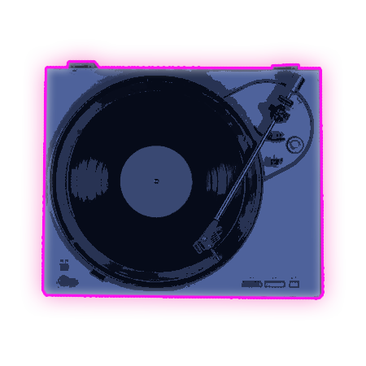

Archivo
Escritorio
Bitácora
✱
Música

Favoritos
- Surrender (Cheap Trick)
- Cada uno en su lugar (Crema)
- Otra Noche en Miami (Bad Bunny)
- Fare Schifo (Willie Peyote)
- No Estoy (Kinder Malo)
Recientes
- Malas Noticias (T. Nocturnos)
- Hell Of Fame (T. Louk)
- Colorin Colorado (M. Morato)
- LEI (P. SANTO)
- L'ETÀ D'ORO (P. SANTO)